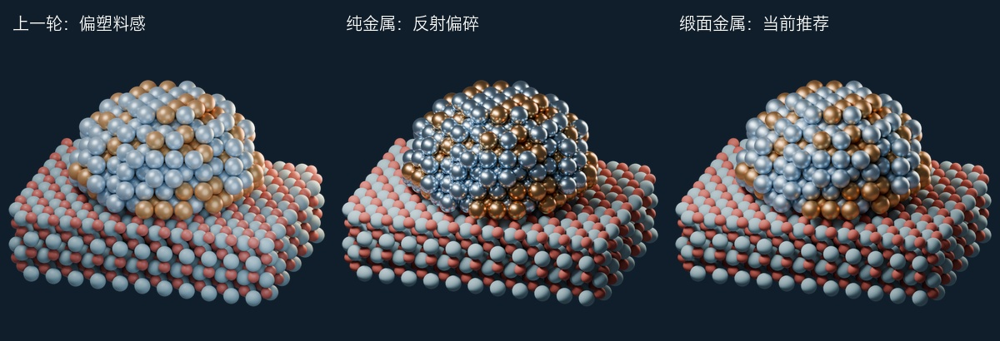
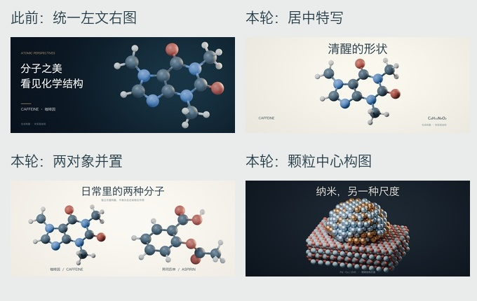

保留科学结构，
重新设计封面。
实际 Blender 渲染 · 材质修改前后 · 不同构图 · 手机缩略图
GitHub 图文版 · 运行和编辑入口
材质不是越亮越好

相同原子坐标、半径与相机。高反射金属版更闪亮，缎面版减少反射噪声；二者都只是原子球体的艺术化表示。
让构图服务文章任务
在手机上再看一次

各横版以320px宽对照。方形另行重排，不拿不同面积作同条件优劣判断。审美结论来自自评，未进行点击率测试。
从材料到可编辑成品
完整示例：坐标、拓扑、配方、运行命令 · 结构封面skill
来源：既有ASE理想未优化PdCu/ZnO模型，及RDKit生成的咖啡因/阿司匹林构象。非实验结构；并置不表示反应或药物建议。原创生成资产采用Apache-2.0；外部软件与字体未打包。没有内部论文材料。此HTML随仓库提供，是否在线托管取决于部署配置。